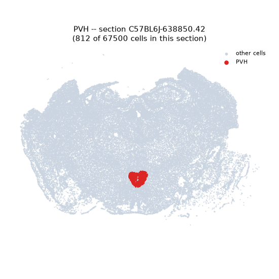
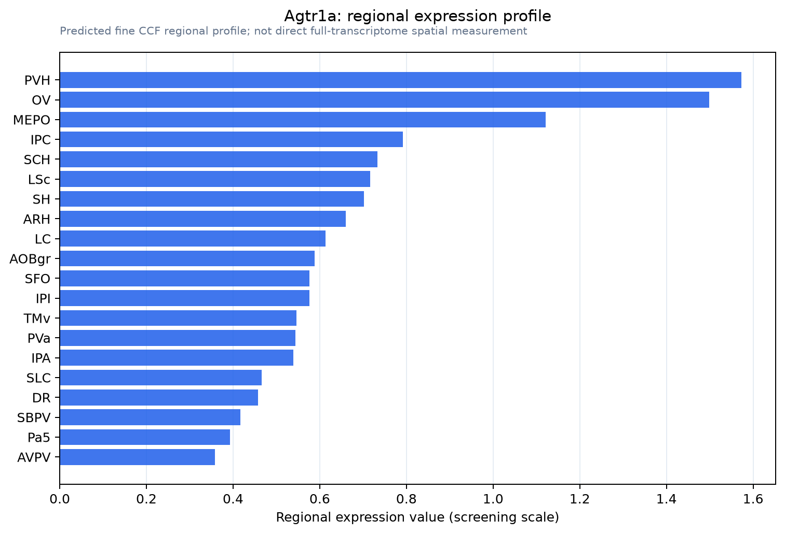

Agtr1a
Type-1 angiotensin II receptor A (Angiotensin II type-1 receptor A) (AT1 receptor A)
Spatial tier: RESTRICTED · Class: GPCR · Top region: PVH (Paraventricular hypothalamic nucleus) · Positive regions: 17/554
46.6Discovery Score
40.4Targetability Score
CEvidence grade C
What this means: Agtr1a: fine CCF profile is restricted toward PVH (top regions: PVH, OV, MEPO, IPC, SCH; 17 positive regions); direct spatial validation is still required.
Direct spatial evidence
MERFISH REGION LOCATOR

Regional expression figure

Predicted WMB × fine-CCF profile; not direct full-transcriptome spatial measurement.
Spatial profile
Evidence and specificity
- Evidence status
- PREDICTED_FINE
- Direct sources
- None; predicted localization only
- Exclusive threshold
- 12 positive regions out of 554
- Spatial specificity
- 0.346
- Top-region fraction
- 0.078
- Filter status
- PASS
Interpretation limits
- Cell-type-to-region projection is imputed expression, not direct spatial measurement.
- Adult reference atlases do not establish stability across age, sex, strain, state, or disease.
- Transcript abundance does not guarantee protein abundance or genetic-tool performance.